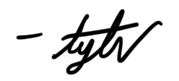

Kimmy's Sadness Killer Program 9000!
i know its cliche at this point for me to make a dumb little program because i use them for everything but i hope this will help cheer you up if you're ever feeling down
i hope that this dumb little thing helps you to feel better if you ever feel sad you mean the entire world to me kimberly and i hate to see you sad and i will always do whatever it takes to help you feel better again
